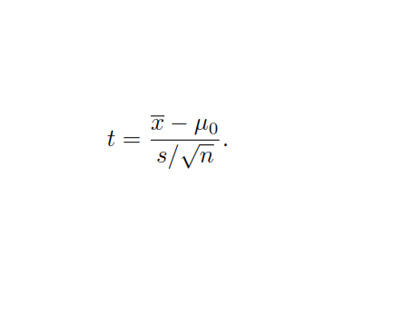
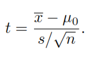

We are interested in finding out whether there is a statistically significant change in mass balance over the observed time period. For these purposes we use R (version R version 4.1.2 (2021-11-01)) and an appropiriate statistical test called t-test: \[t = \frac{\overline{x} - \mu_0}{s/\sqrt{n}}.\]
Формула

In [3]: #Или так
Формула
